13 - Skinner Family Network
5707 Scenic Ave - Skinner Family Network
This page ties the house to a deeper, source-backed Skinner genealogy. The key bridge remains strong: the Timothy Skinner House nomination names Timothy Warner Skinner as builder/original owner, and Dr. Avery Warner Skinner's Find a Grave memorial says he was born in the historic brick house on Railroad Street — the same street/history thread that later converges with Scenic Avenue and the former A. W. Skinner home cited in the Legion material.
Working family tree
- Timothy Skinner + Ruth Warner
- Hon. Avery Skinner (1796-1876) + Elizabeth Lathrop "Eliza" Huntington (1802-1833)
- Timothy Warner Skinner (1827-1915)
- 1st wife: Sarah Elizabeth Calkins (1833-1861)
- 2nd wife: Sarah L. Rose (1833-1910)
- children:
- Elizabeth Viola "Lizzie" Skinner Stone (1857-1943)
- Hattie Rose Skinner (1860-1861)
- Mary Eliza Skinner (1863-1864)
- Anna Grace Skinner (1868-1894)
- Dr. Avery Warner Skinner (1870-1937)
- siblings of Timothy W. from Avery + Eliza memorials: Lucretia L. Skinner (1824-1824), Solomon Avery Skinner (1829-1830), Eliza Huntington Skinner Richardson (1833-1892)
- half siblings from Avery's second marriage to Charlotte P. Stebbins: Rev. James Avery Skinner (1835-1917), Charlotte S. Skinner (1837-1841), Albert Thompson Skinner (1841-1883), Charles Rufus Skinner (1844-1928), Mary Grace Skinner Wright (1846-1914)
- Timothy Warner Skinner (1827-1915)
- Hon. Avery Skinner (1796-1876) + Elizabeth Lathrop "Eliza" Huntington (1802-1833)
House relationship summary
- Timothy W. Skinner remains the documented original owner / builder in the nomination narrative.
- Dr. Avery Warner Skinner is now more tightly anchored as Timothy's son, buried locally, and described on his memorial as born in the historic brick house on Railroad Street.
- The 1961 centennial issue statement that the Legion bought the former home of A. W. Skinner on Scenic Avenue still acts as the strongest later-generation continuity bridge.
Timothy Warner Skinner
- Born: 24 Apr 1827 - Mexico, Oswego County, New York, USA
- Married: Sarah Elizabeth Calkins in 1856; Sarah L. Rose on 5 Aug 1862 at Schuyler, Herkimer County, New York
- Died: 30 Mar 1915 - Mexico, Oswego County, New York, USA
- Buried: Mexico Village Cemetery, Mexico, Oswego County, New York, USA
- Regional connection: Mexico-born lawyer and officeholder whose marriages and burial all stay inside the broader Central New York orbit, with the house story anchored in Mexico village / Railroad Street / Scenic Avenue continuity.
Public obituary text on Find a Grave presents him as attorney, law partner of Judge Cyrus Whitney, Oswego County surrogate, village president, Mexico Academy trustee, Methodist trustee, and prominent Mason. The same memorial explicitly identifies surviving son Avery W. Skinner of the Albany Education Department and daughter Mrs. J. B. Stone of Auburn.
Parents and siblings
- Parents: Avery Skinner and Elizabeth Lathrop "Eliza" Huntington Skinner
- Full siblings: Lucretia L. Skinner; Solomon Avery Skinner; Eliza Huntington Skinner Richardson
- Half siblings: Rev. James Avery Skinner; Charlotte S. Skinner; Albert Thompson Skinner; Charles Rufus Skinner; Mary Grace Skinner Wright
Children appearing on the public memorial set
- Elizabeth Viola "Lizzie" Skinner Stone
- Hattie Rose Skinner
- Mary Eliza Skinner
- Anna Grace Skinner
- Dr. Avery Warner Skinner
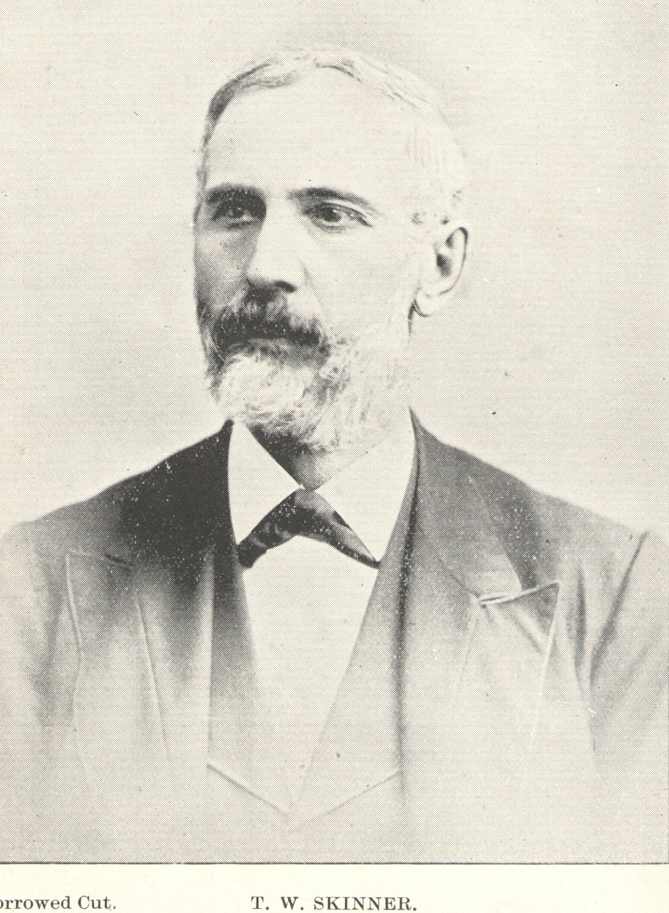


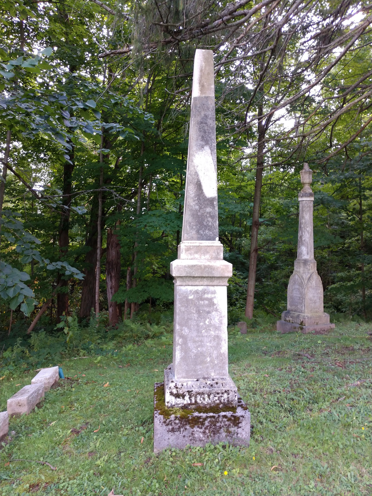
Actual image files captured from the public Find a Grave photo page and saved locally under media/images/history/skinner-family/timothy-warner-skinner/.
Hon. Avery Skinner
- Born: 9 Jun 1796 - Westmoreland, Cheshire County, New Hampshire, USA
- Married: Elizabeth "Eliza" Lathrop Huntington in 1822; Charlotte Prior Stebbins in 1834
- Died: 24 Nov 1876 - Maple View, Oswego County, New York, USA
- Buried: Maple View Cemetery / Mexico area, Oswego County, New York, USA (per Find a Grave memorial citation)
Find a Grave and WikiTree align on the broad biography: son of Timothy Skinner and Ruth Warner; came west via Watertown; settled Union Square / Maple View; built the public house; helped establish the post office/mail route; served as county treasurer, county judge, assemblyman, state senator, academy founder, and railroad promoter.
Children visible from the memorial network
- With Eliza Huntington: Lucretia L. Skinner, Timothy Warner Skinner, Solomon Avery Skinner, Eliza Huntington Skinner Richardson
- With Charlotte Prior Stebbins: Rev. James Avery Skinner, Charlotte S. Skinner, Albert Thompson Skinner, Charles Rufus Skinner, Mary Grace Skinner Wright
Elizabeth Lathrop "Eliza" Huntington Skinner
- Born: 1802 - Windham, Windham County, Connecticut, USA (life span 1802-1833 on WikiTree; obituary age aligns)
- Married: Avery Skinner in 1822
- Died: 15 Jul 1833 - Union Square / Mexico area, Oswego County, New York, USA
- Buried: memorial exists on Find a Grave; use cemetery detail cautiously unless independently confirmed
The memorial transcription is unusually valuable: it says she died two days after giving birth to daughter Eliza Huntington Skinner, and that husband Avery was left with care of the newborn and son Timothy Warner Skinner. WikiTree also extends the line upward to parents Jedediah Huntington (1770-1825) and Elizabeth Jones (about 1772-1847).
Sarah Elizabeth Calkins Skinner
- Born: 1833 - New York, USA
- Married: Timothy Warner Skinner in 1856
- Died: 20 Jun 1861 - Mexico, Oswego County, New York, USA
- Buried: village records cited on memorial say Mexico Village Cemetery; marker shown on memorial appears to be a cenotaph in Maple View Cemetery
- Regional connection: Her documented death in Mexico and the Mexico-vs-Maple-View burial note keep her firmly inside the same Mexico / Oswego County geography as the house and the larger Skinner network.
This memorial matters because it tightens the first-marriage branch, adds the cemetery-record nuance, and explains why later children are split between full and half sibling categories on the later memorial set.
Sarah L. Rose Skinner
- Born: 1833 - New York, USA
- Married: Timothy Warner Skinner on 5 Aug 1862 at Schuyler, Herkimer County, New York (date/place from Timothy memorial and WikiTree)
- Died: 24 May 1910 - Mexico, Oswego County, New York, USA
- Buried: Mexico Village Cemetery, Mexico, Oswego County, New York, USA
- Regional connection: Strong Central New York footprint: marriage at Schuyler in Herkimer County, later household in Mexico, and burial in Mexico Village Cemetery. Her son's obituary-text memorial also places her in Mexico Academy life as a former preceptress.
Her memorial and the children's memorials anchor the later household that includes Anna Grace and Dr. Avery Warner Skinner.
Elizabeth Viola "Lizzie" Skinner Stone
- Born: 25 Sep 1857 - Mexico, Oswego County, New York, USA
- Married: spouse surname Stone is confirmed by memorial title; the Timothy obituary identifies her as Mrs. J. B. Stone of Auburn, giving a partial but useful identification for the husband
- Died: 4 Jan 1943 - La Grange, Cook County, Illinois, USA
- Buried: Mexico Village Cemetery, Mexico, Oswego County, New York, USA
- Regional connection: Born and buried back in Mexico, Oswego County, with married-life evidence extending to Auburn in Central New York before her later Illinois death.
She appears on Timothy's memorial as a child and on Anna Grace Skinner's memorial as a half sibling, consistent with the first marriage. In this pass, she is the only child whose spouse can be identified at all from the clean public-text trail.
Hattie Rose Skinner
- Born: 7 Jan 1860 - Mexico, Oswego County, New York, USA
- Married: not applicable; died in infancy
- Died: 4 May 1861 - Mexico, Oswego County, New York, USA
- Buried: Mexico Village Cemetery, Mexico, Oswego County, New York, USA
- Regional connection: Entire short life is documented in Mexico, Oswego County.
Mary Eliza Skinner
- Born: 11 Jun 1863 - Mexico, Oswego County, New York, USA
- Married: not applicable; died in infancy
- Died: 9 May 1864 - Mexico, Oswego County, New York, USA
- Buried: Mexico Village Cemetery, Mexico, Oswego County, New York, USA
- Regional connection: Entire short life is documented in Mexico, Oswego County.
Anna Grace Skinner
- Born: 14 Jun 1868 - Mexico, Oswego County, New York, USA
- Married: not yet established from the clean public-text sources used here
- Died: 23 Dec 1894 - age 26
- Buried: Mexico Village Cemetery, Mexico, Oswego County, New York, USA
- Regional connection: Mexico birth and Mexico burial keep her entirely inside the Oswego County branch of the family story.
Her memorial is useful because it explicitly links her back to parents Timothy Warner Skinner and Sarah L. Rose Skinner and sideways to siblings / half siblings.
Dr. Avery Warner Skinner
- Born: 18 Aug 1870 - Mexico, Oswego County, New York, USA
- Married: not yet confirmed in the cleanly fetchable public text used in this pass
- Died: 13 Dec 1937 - Albany, Albany County, New York, USA
- Buried: Mexico Village Cemetery, Mexico, Oswego County, New York, USA
- Regional connection: Born in the family's Mexico brick house on Railroad Street, later active across New York State, died in Albany, and was returned for burial to Mexico — a strong Central New York continuity line.
Career highlights from the memorial: Mexico Academy graduate (1887); Syracuse University graduate (1892); principal at Andes Collegiate Institute; principal of the Mexico school when Mexico Military Academy became a Union Free School; superintendent in Oneida; later inspector/director in the New York State Education Department. Most importantly for the house file, the memorial says he was born in the historic brick house on Railroad Street.
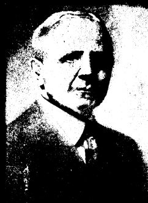
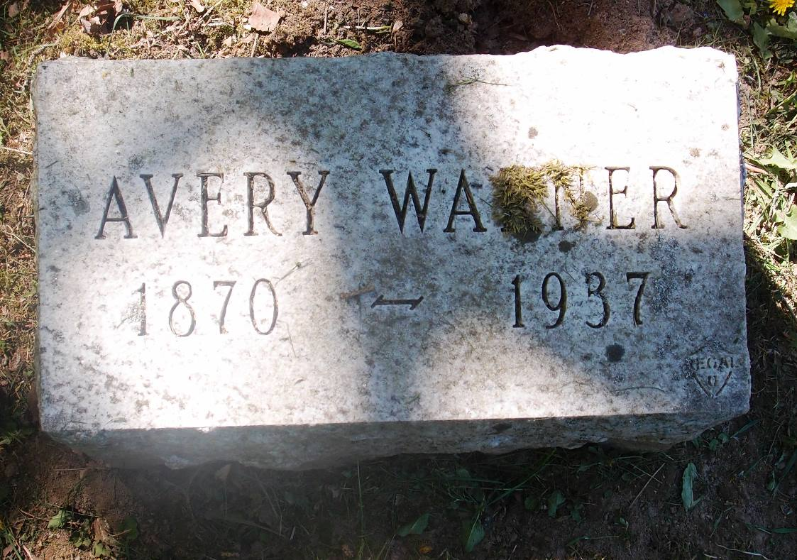
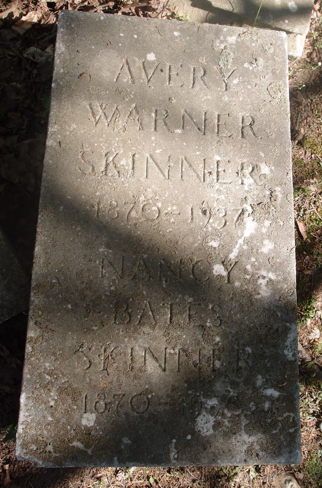
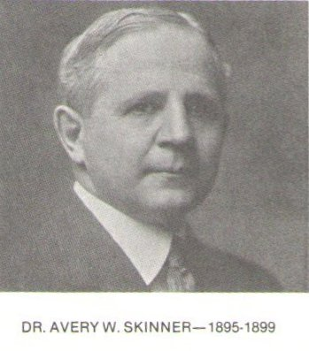
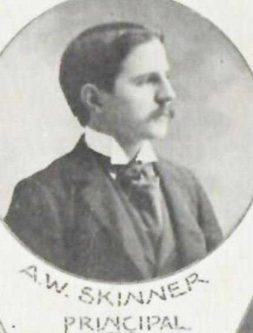
Actual image files captured from the public Find a Grave photo page and saved locally under media/images/history/skinner-family/avery-warner-skinner/.
Children memorial image captures
Anna Grace Skinner
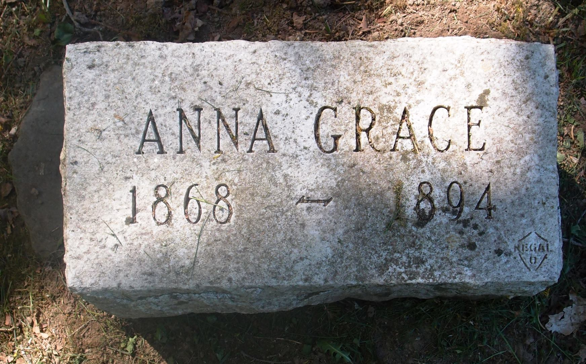
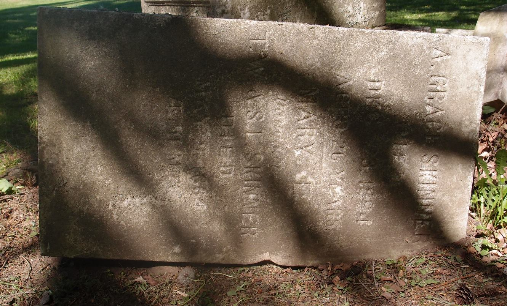
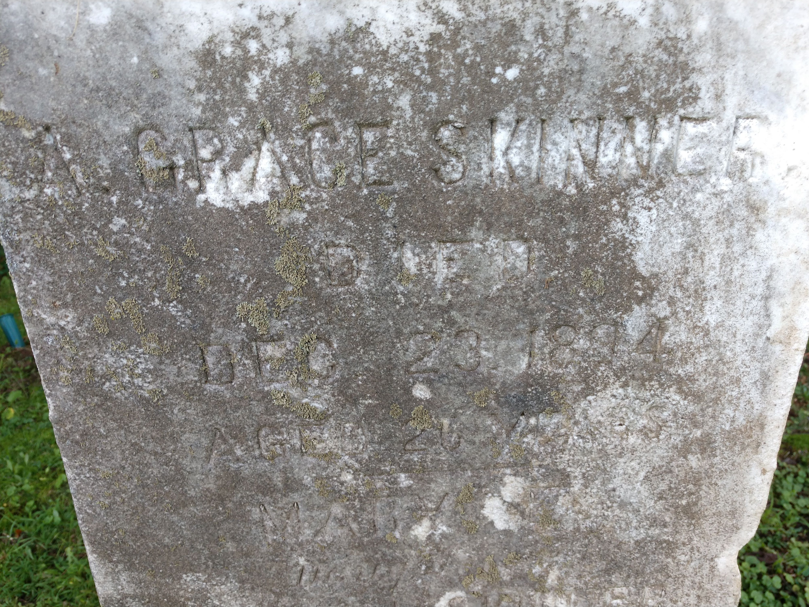
Hattie Rose Skinner
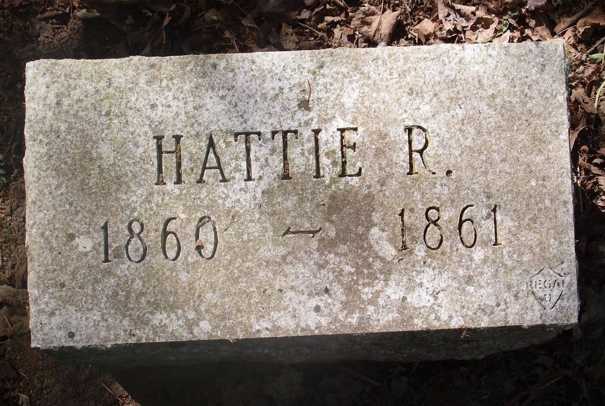

Mary Eliza Skinner
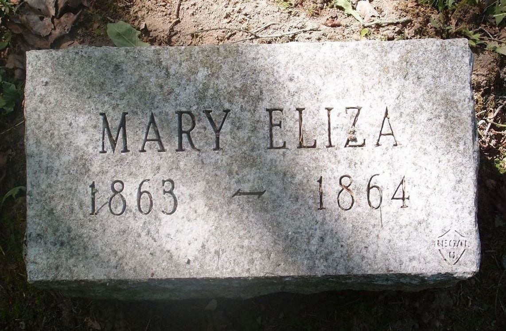


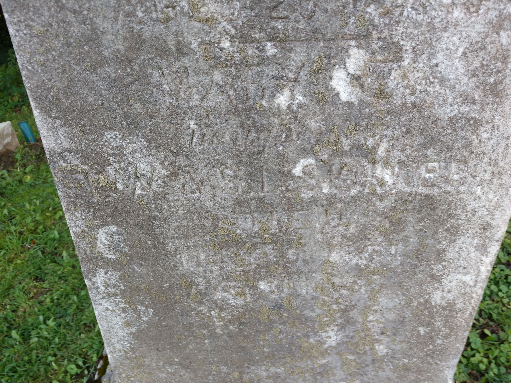
Elizabeth Viola "Lizzie" Skinner Stone
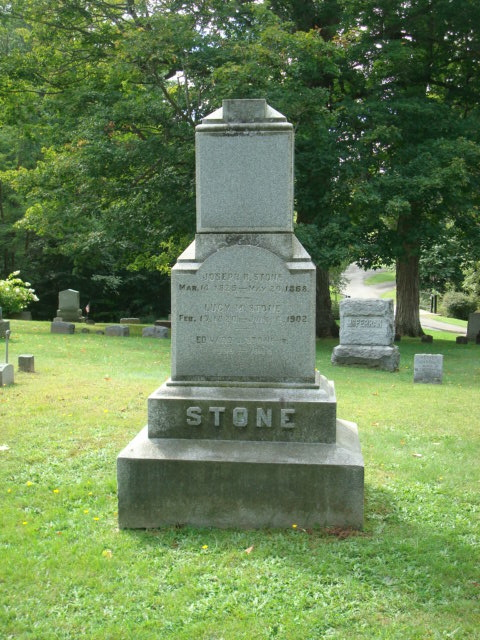
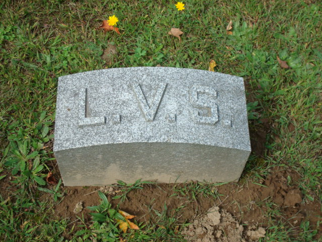
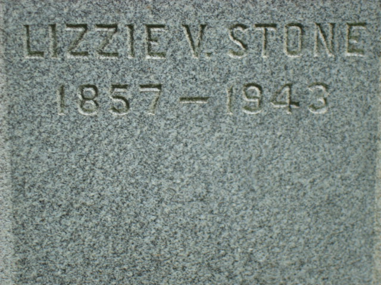
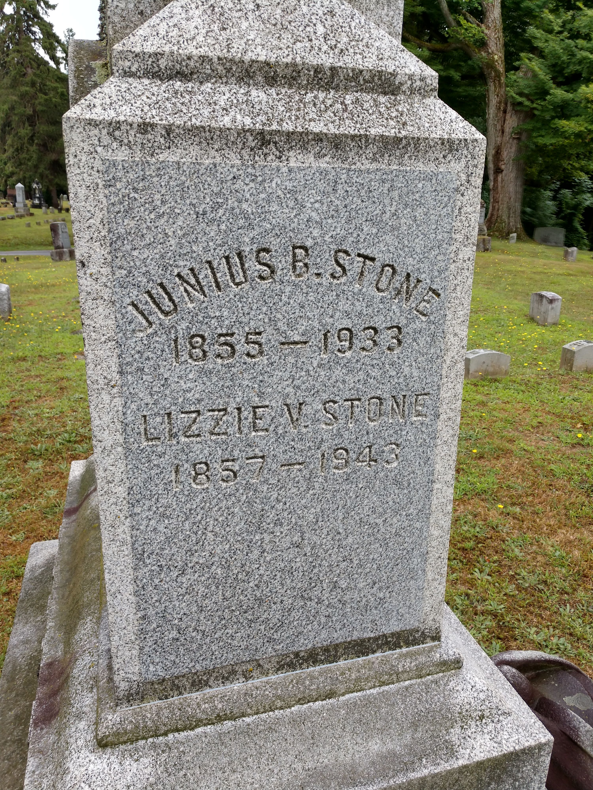
Collateral relatives worth keeping in the story
Charles Rufus Skinner
- Born: 4 Aug 1844 - Oswego County, New York, USA
- Died: 30 Jun 1928 - Pelham Manor, Westchester County, New York, USA
- Buried: Brookside Cemetery, Watertown, Jefferson County, New York, USA
Timothy's obituary identifies Charles as a surviving brother and former superintendent of public instruction, reinforcing how prominent the broader Skinner network was.
Rev. James Avery Skinner
- Born: 15 Nov 1835
- Married: Cornelia Bristol (Feb 1860); Octavia Lane (8 Mar 1869)
- Died: 25 Nov 1917 - Manhattan, New York County, New York, USA
- Buried: Woodlawn Cemetery, Bronx, Bronx County, New York, USA
Another half brother from Avery's second marriage; his memorial also lists children Charlotte Emma, Mary Grace, and Herrick Johnson.
Sources saved locally
media/docs/2026-03-27-findagrave-family-pass.mdmedia/docs/2026-03-27-wikitree-family-pass.mdmedia/docs/2026-03-27-spouse-pass.mdmedia/docs/2026-03-26-findagrave-timothy-warner-skinner-extract.mdmedia/docs/2026-03-26-findagrave-avery-warner-skinner-extract.mdmedia/docs/2026-03-26-wikitree-skinner-10993.mdmedia/docs/2026-03-26-ancestry-findagrave-index-80975866.md
Recently added family-source tranche
The Skinner page now also draws on a broader late-March source tranche, including:
- Avery W. Skinner obituary material (1937)
- Charles Rufus Skinner biographical material
- 1947 newspaper mentions involving A. W. Skinner
- 1958 Richard B. Skinner wedding notice
- compiled Skinner genealogy and property-history notes
These sources help extend the family story beyond Timothy W. Skinner and strengthen the Mexico / Oswego County / Central New York regional continuity across multiple generations.
Audit follow-up notes
- Charles Rufus Skinner should be understood as part of the broader notable Skinner line relevant to Mexico/Oswego context, even when not directly tied to the house parcel.
- Richard B. Skinner appears in later family/newspaper material and helps extend the documented family story into the mid-20th century.
- Sarah L. Rose remains important not only as Timothy W. Skinner’s second wife, but also because source trails connect her to Mexico Academy educational life.
Summary-sync audit note
The Skinner family page has been reconciled against the late-March source tranche, including obituary, genealogy, spouse, and later-family newspaper materials. Where family details remain uncertain, the page now prefers explicit uncertainty over speculation.